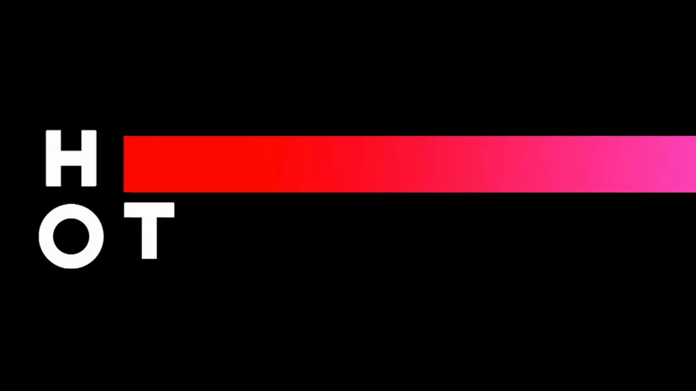

Contact
Cv
Title Sequence
Student Project With Yuval Israel
Video Art
Direction & Filming
2024
Contact
Cv
Title Sequence
Student Project With Yuval Israel
Video Art
Direction & Filming
2024
A title sequence for a fictional TV series. Drawing the viewer into an ultra religious world of crime showcasing complexity of a layered world.
The titles explore where faith and crime meet, comparing the two worlds through shared gestures, objects, and rituals until the line between them blurs.


